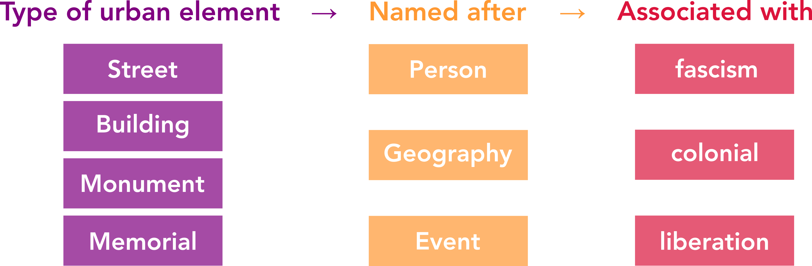
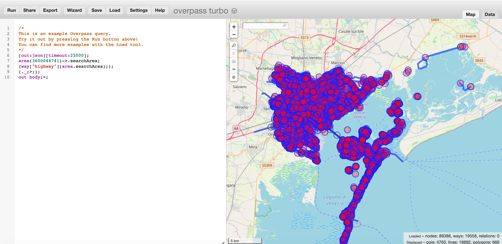
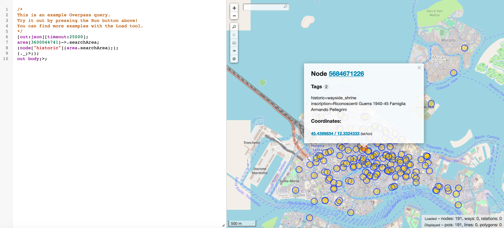
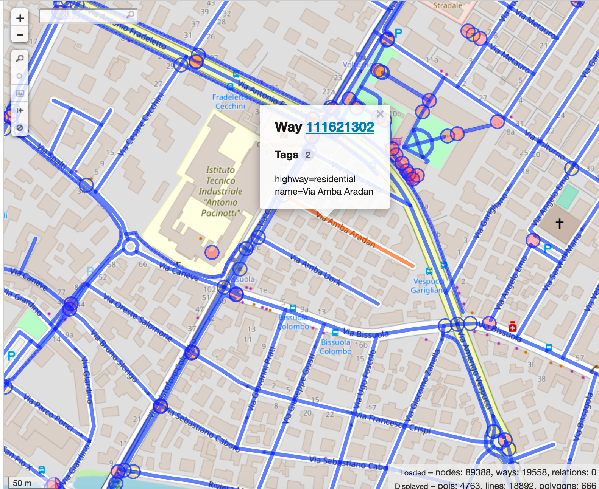
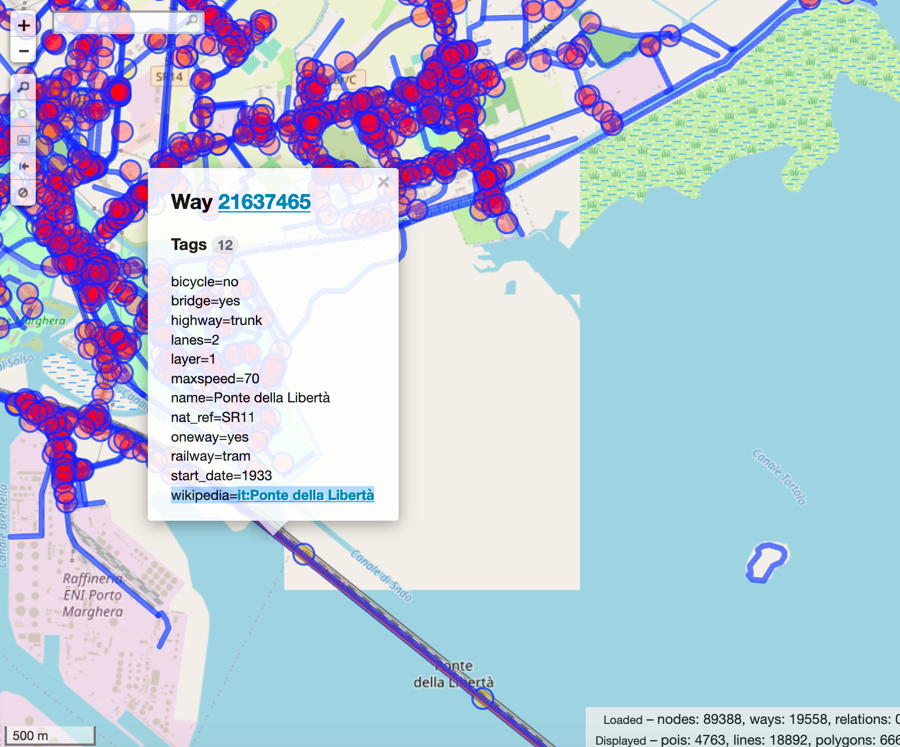
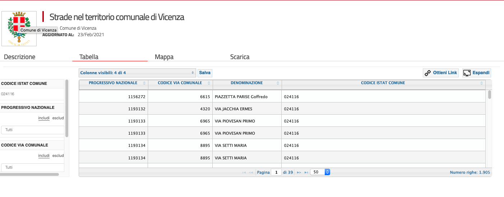

Urban space and collective historical memory in Veneto
An investigation of places & toponomy referring to the historical period of 1920s-1940s
Project proposal by alice_corona for the course Public History 2021 by Prof. Stefano Dall'Aglio at Ca'Foscari University of Venice • Venice Centre for Digital and Public Humanities.1. In short
The goal of the project is to introduce to a wide audience the debate, usually confined among academics, on the relationship between memory and history and on the role that historical legacies and physical traces of (controversial) past have in shaping collective memory-building practices and imaginaries of the past.
The goal of the project is to introduce to a wide audience the debate, usually confined among academics, on the relationship between memory and history and on the role that historical legacies and physical traces of (controversial) past have in shaping collective memory-building practices and imaginaries of the past.
I believe the ground is fertile for this type of public conversation.
For starters, Black Lives Matter protests have brought this debate in mainstream media, with their actions of tearing down statues referencing the colonial past - actions either heatedly praised or condemned.
Secondly, resurgence of right-wing movements and populism in recent years has seen a growth in historical revisionism, in Italy in particular related to the two decades of fascism.
The project, in the form of a blog post written in a language suitable for a general public, will present the scholarly literature on the theme of collective memory and public legacy of the fascism era, of its colonial expansion, and of the following Resistenza.
The literature will be discussed in conjuction to a specific case study - the presence of names associated to the period within urban elements of cities in Veneto - which will be narrated thorugh the use of interactive data visualizations.
The aim is to keep the topic engaging and relatable to places of daily experiences, in the hope that the insights of the literature review presented will not remain something abstract but will hopefully spur a critical reflection in the reader.
Relevance of the project to Public History
- Deals with the presence of historical past in the public space and everyday lives.
- Tries to foster the application of critical thinking derived from scholarly works of historians to the comprehension of current events and debates.
- Communicates to a general public issues that are usually discussed in academia among scholars.
2. Inspiration
a. Scholarly articles
Potential list of references
- Donadon, M. (2019). 2 Tracce Imperiali a Venezia. In Per Una Dimensione Imperiale. Edizioni Ca’ Foscari.
- Henneberg, K. (2004). Monuments, Public Space, and the Memory of Empire in Modern Italy. History and Memory, 16(1), 37-85.
- Malone, H. (2017). Legacies of Fascism: Architecture, heritage and memory in contemporary Italy. Modern Italy, 22(4), 445-470.
- Manucci, L. (2019). Populism and Collective Memory: Comparing Fascist Legacies in Western Europe (1st ed.). Routledge. https://doi.org/10.4324/9780429275289
- Oto-Peralías, D., & Gutiérrez Mora, D. (2021). Gendered cities: Studying urban gender bias through street names.
- Pezzino, P. (2005) The Italian resistance between history and memory, Journal of Modern Italian Studies, 10:4, 396-412
- Nick Carter & Simon Martin (2017) The management and memory of fascist monumental art in postwar and contemporary Italy: the case of Luigi Montanarini’s Apotheosis of Fascism, Journal of Modern Italian Studies, 22:3, 338-364,
b. Public (history) works
 Monuments of the Algerian war by V. Jendrysiak, M. Amador, S. Merlet, B. Vavon, T. Vercelot • published in Public History Online Discussion
Monuments of the Algerian war by V. Jendrysiak, M. Amador, S. Merlet, B. Vavon, T. Vercelot • published in Public History Online Discussion
 Luoghi della Memoria: Venezia 1943-1945 by Istituto veneziano per la storia della Resistenza e della società contemporanea (Iveser)
Luoghi della Memoria: Venezia 1943-1945 by Istituto veneziano per la storia della Resistenza e della società contemporanea (Iveser)
 Postcolonial Italy. Mapping Colonial Heritage • Project coordinated by Daphné Budasz and Markus Wurzer.
Postcolonial Italy. Mapping Colonial Heritage • Project coordinated by Daphné Budasz and Markus Wurzer.
 Ascari e Schiavoni. Il razzismo coloniale a Venezia • Exhibition organized by Ca' Foscari and coordinated by Alessandro Casellato.
Ascari e Schiavoni. Il razzismo coloniale a Venezia • Exhibition organized by Ca' Foscari and coordinated by Alessandro Casellato.
3. Sources
Possible data scheme
a. Open Street Map
a. Open Street Map
a. Open Street Map
b. Wikipedia / Wikidata
c. Other
Potential issues & fuzziness of results
- DATA COLLECTION PHASE→ No indication as to how updated Open Street Map data is. How often do streets change names & how long before change is reflected in OSM?
- CLASSIFICATION PHASE→ Uncertainty in linking street names to the actual person/place/event as there could be ambiguities.
- CLASSIFICATION PHASE→ Uncertainty in classifying people and places in single unambiguous categories, loss of complexity.
- CLASSIFICATION PHASE→ Will need to assess the number of unique street names to classify, in order to decide on the scale of the project and its feasibility: one neighborhood? one city? comparison of a few cities? whole region?
- INTERPRETATION PHASE→ Unfeasible to look at the evolution of street names, while it would be interesting to see how the names have evolved.
4. Expected outcome
a. Blog post with interactive data visualizations
The blog post will summarize the literature review and data analysis findings, offering interactive maps and data visualizations, with the goal of communicating to a wide non-academic public the complex issue of collective historical memory and historical traces in public urban spaces. It could be connected with other public history projects - like Postcolonial Italy - to offer other forms of public engagement and dissemination, like historical walking tours.
b. Wikipedia articles?
The work of matching street names to Wikidata objects could lead to the writing of new Wikipedia articles (for non-existing entries) or to the linking of existing ones to Open Street Map elements.